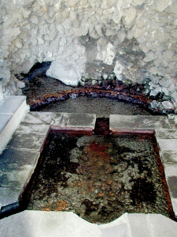
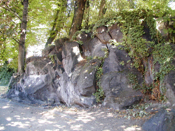
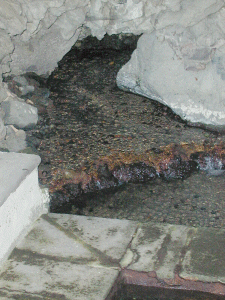
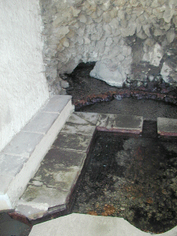

A quelques dizaines de mètres de
la rue de l'Oradou il existait un
château qui a été démoli
il y a quelques années. Auvergne Habitat a
construit des résidences dans le parc du
château mais la source a été
sauvée et coule encore comme un ruisseau,
même en période de sécheresse.
Elle est protégée par un
bâtiment en pierre de Volvic couvert de
dalles de la même pierre et l'ouverture du
toit naguère munie d'une verrière
devait éclairer le bassin. On appelle ce
type de bâtiment un nymphée.
Le bâtiment est entouré de
marronniers et de tilleuls immenses qui ont sans
doute les "pieds dans l'eau".
D'où vient cette eau ?
C'est un ruisseau qui a
été recouvert par une coulée
volcanique, celle du Puy de Gravenoire. Le
front de coulée arrive là et l'eau
coule dessous.


Le basalte du front de coulée est
bien visible à côté du
bâtiment de la source.
Les marronniers, tilleuls et
érables sont solidement plantés dans
le rocher.

On voit nettement le ruisseau souterrain
qui arrive sous le basalte. Le bassin est
carré et les angles opposés à
l'arrivée d'eau sont creusés en
arrondis dans lesquels l'eau s'écoule. Que
devient-elle ensuite ??? Est-elle rejetée
à l'égout comme la plupart des
sources clermontoises ? Je l'ignore ... ce que je
sais c'est que le plateau de la Sarre qui est en
contrebas possède une nappe d'eau
souterraine qui alimente de nombreux puits de
jardin.

Si
vous arrivez de la grotte des laveuses, cliquez ici
pour
fermer